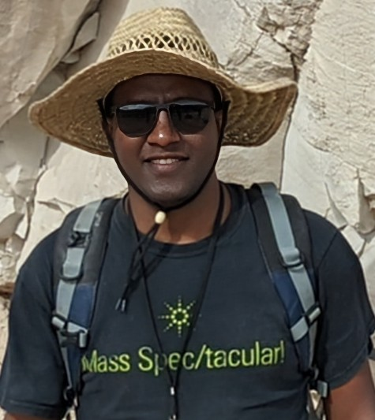

Welcome
I am Mebrahtu Fisseha Weldeghebriel, a postdoctoral research fellow in the Department of Geosciences at Princeton University. I reconstruct the chemistry of Earth's ancient oceans from the evaporites, carbonate, and dolostones that preserve it. My work connects the secular variations in seawater chemistry to plate tectonics, the carbon cycle, and Earth's climate over hundreds of millions of years, and it extends to the lithium enrichment in sedimentary brines that supply critical minerals today. I am currently developing a method to date and map impurities in the oldest ice on Earth.
This website is currently under reconstruction. Please check back soon.
